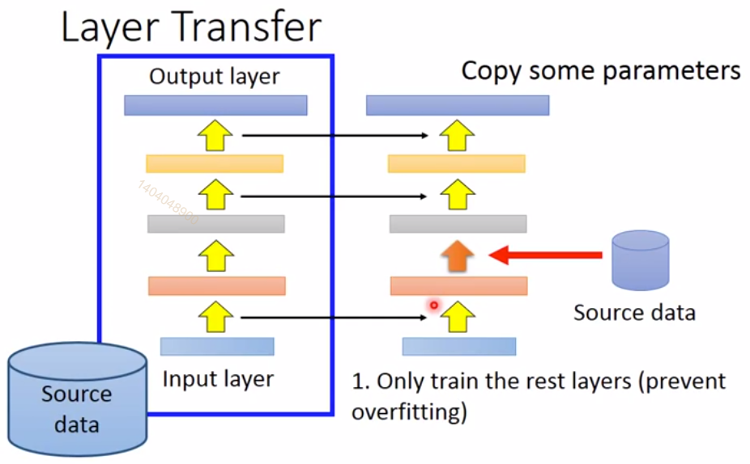

有时，如果模型太复杂难以优化，或是如果任务非常困难，直接训练模型来解决特定任务的挑战可能太大。 有时训练一个较简单的模型来求解问题，然后使模型更复杂会更有效。 训练模型来求解一个简化的问题，然后转移到最后的问题，有时也会更有效些。 这些在直接训练目标模型求解目标问题之前，训练简单模型求解简化问题的方法统称为预训练。
1. 贪心监督预训练
[warning] 具体过程不懂
贪心算法将问题分解成许多部分，然后独立地在每个部分求解最优值。 令人遗憾的是，结合各个最佳的部分不能保证得到一个最佳的完整解。 然而，贪心算法计算上比求解最优联合解的算法高效得多，并且贪心算法的解在不是最优的情况下，往往也是可以接受的。 贪心算法也可以紧接一个精调阶段，联合优化算法搜索全问题的最优解。 使用贪心解初始化联合优化算法，可以极大地加速算法，并提高寻找到的解的质量。
预训练算法，特别是贪心预训练，在深度学习中是普遍存在的。 在本节中，我们会具体描述这些将监督学习问题分解成其他简化的监督学习问题的预训练算法。 这种方法被称为贪心监督预训练。
在贪心监督预训练的原始版本{cite?}中，每个阶段包括一个仅涉及最终神经网络的子集层的监督学习训练任务。 贪心监督预训练的一个例子如\fig?所示，其中每个附加的隐藏层作为浅层监督多层感知机的一部分预训练，以先前训练的隐藏层输出作为输入。 {Simonyan2015}~预训练深度卷积网络（11层权重），然后使用该网络前四层和最后三层初始化更深的网络（多达19层权重），并非一次预训练一层。 非常深的新网络的中间层是随机初始化的。 然后联合训练新网络。 还有一种选择，由{Yu+al-2010}提出，将先前训练多层感知机的\emph{输出}，以及原始输入，作为每个附加阶段的输入。
\begin{figure}[!htb] \ifOpenSource \centerline{\includegraphics{figure.pdf}} \else \centerline{\includegraphics{Chapter8/figures/deep_sup}} \fi \caption{一种形式的贪心监督预训练的示意图~{cite?}。 (a)我们从训练一个足够浅的架构开始。 (b)同一个架构的另一描绘。 (c)我们只保留原始网络的输入到隐藏层，并丢弃隐藏到输出层。 我们将第一层隐藏层的输出作为输入发送到另一监督单隐层\,MLP（使用与第一个网络相同的目标训练），从而可以添加第二层隐藏层。 这可以根据需要重复多层。 (d)所得架构的另一种描绘，可视为前馈网络。 为了进一步改进优化，我们可以联合地精调所有层（仅在该过程的结束或者该过程的每个阶段）。 } \end{figure}
为什么贪心监督预训练会有帮助呢？ 最初由~{Bengio-nips-2006}提出的假说是，其有助于更好地指导深层结构的中间层的学习。 一般情况下，预训练对于优化和泛化都是有帮助的。
2. 迁移学习的扩展
[success] Ng补充
迁移学习
问：什么时候迁移学习有用？
答：假如从任务A迁移到任务B，要求：
（1）A和B有相同的输入类型，例如都是图像、或都是音频
（2）A的数据比B的数据多得多
（3）目标是提升B的性能
（4）A的单个样本比B的价值大
（5）A学的是较低层次的特征
问：迁移学习的方法：
（1）下载一个开源的模型及其所有权重
（2）把前面所有层Freeze。freeze代表不再更新参数。
（3）把输出层换成自己的输出层。这样即使训练集很小也有比较好的效果。
freeze意味着这些层的结构和权重不再改变。因此可以把freeze的模型看成是一个从样本到向量的映射。
如果自己有大量的样本集，可以不freeze开源模型的所有层，只freezed前面一部分，后面一部分仍更新参数，最后配上自己的输出。也可以除freeze以外的所有层换成自己的。
自己的数据越多，需要的freeze层越少。
李宏毅补充：
迁移学习的挑战：当B任务的数据太少时，可能会对B过拟合。
解决方法：
（1）Conservative Training
即增加一个正则化项，使得对于同一输出，新模型与旧模型的输出越接近越好。
（2）Lay Transfer

copy一部分layer的weights并fix住，然后通过自己的数据只fine-tune另一部分lalyer的weights.
对于语音辨识问题，copy上面层，而fine-tune输入层。
对于图像识别问题，copy下面层，而fine-tune输出层。
另一个与监督预训练有关的方法扩展了迁移学习的想法：{yosinski-nips2014}在一组任务上预训练了层权重的深度卷积网络（1000个ImageNet对象类的子集），然而用该网络的前层初始化同样规模的网络。 然后第二个网络的所有层（上层随机初始化）联合训练以执行不同的任务（1000个ImageNet对象类的另一个子集），但训练样本少于第一个任务。 神经网络中另一个和迁移学习相关的方法将在15.2节讨论。
3. FitNets方法
[warning] 具体过程不懂，浅宽模型 -> 深窄模型
另一条相关的工作线是\textbf{FitNets}~{cite?}方法。 这种方法始于训练深度足够低和宽度足够大（每层单元数），容易训练的网络。 然后，这个网络成为第二个网络（被指定为\,\textbf{学生}）的\,\textbf{老师}。 学生网络更深更窄（11至19层），且在正常情况下很难用SGD训练。 训练学生网络不仅需要预测原任务的输出，还需要预测教师网络中间层的值，这样使得训练学生网络变得更容易。 这个额外的任务说明了隐藏层应如何使用，并且能够简化优化问题。 附加参数被引入来从更深的学生网络中间层去回归层教师网络的中间层。 然而，该目标是预测教师网络的中间隐藏层，并非预测最终分类目标。 学生网络的低层因而具有两个目标：帮助学生网络的输出完成其目标和预测教师网络的中间层。 尽管一个窄而深的网络似乎比宽而浅的网络更难训练，但窄而深网络的泛化能力可能更好， 并且如果其足够窄，参数足够少，那么其计算代价更小。 没有隐藏层的提示，学生网络在训练集和测试集上的实验表现都很差。 因而中间层的提示是有助于训练很难训练的网络的方法之一，但是其他优化技术或是架构上的变化也可能解决这个问题。